ERP 화면 (PC·웹) ①
영업자·관리자가 보는 화면입니다. 매물 검색부터 계약 진행·정산까지 자체 ERP 한 곳에서 처리합니다.

상품 찾기 — 여러 렌트사 매물을 한 화면에서 통합 검색·필터 (상시 출고가능 약 350대)

계약 관리 — 출고문의 → 서류 → 잔금 → 인도까지 진행상황을 한눈에. 정산 내역도 함께 관리
프리패스모빌리티 회사소개서5
프리패스모빌리티는 여러 렌트사의 차량을 자체 ERP로 통합·표준화하여, 저신용·무심사 고객도 장기렌트를 이용할 수 있도록 연결하는 플랫폼입니다. 단순 매물 중개가 아니라 계약·정산·사후관리까지 책임지고 운영(책임중개)하며, 영업 파트너가 영업에만 집중할 수 있도록 지원합니다.
| 사업 영역 | 저신용·무심사 장기렌트 책임중개·운영 및 차량 사후관리 |
|---|---|
| 운영 시스템 | 자체 ERP — 매물·계약·정산 데이터 운영 |
| 사후관리 | 자체 관리망 + 제휴 정비·사고 네트워크 — 제휴처는 프리패스모빌리티를 통해 처리 |
| 파트너 지원 | 실시간 매물 연동 · 홈페이지 · 신차 견적기 · 정산 관리 |
현장에서 영업자가 겪던 번거로움을, 프리패스모빌리티는 시스템과 책임운영으로 풉니다.
| 기존 방식의 문제 | 프리패스 방식 |
|---|---|
| 렌트사마다 매물표·표기가 제각각 | ERP에서 하나의 기준으로 정리 |
| 조건 확인을 매번 전화·카톡으로 | 출고가능 매물·조건을 시스템에서 즉시 확인 |
| 정산 기준이 업체마다 다름 | 계약·정산 내역을 한 화면에서 관리 |
| 고객 문의 시 자료 전달이 번거로움 | 사진·가격·조건을 정리된 형태로 바로 전달 |
| 사후관리 때 영업자가 중간에서 계속 대응 | 프리패스가 렌트사와 조율해 처리 |
흩어진 매물과 제각각인 조건을 ERP로 표준화하고, 계약·정산·사후관리까지 책임지고 운영합니다. 영업자는 복잡한 일은 맡기고 영업에만 집중하면 됩니다.
핵심은 차량 표준화입니다. 렌트사마다 차종명·색상·옵션·대여조건 표기가 제각각이면 비교도, 견적도, 연동도 어렵습니다. 프리패스 ERP는 이 모든 걸 하나의 기준으로 맞춰 둬서, 어느 렌트사 매물이든 쉽게 찾고 바로 쓸 수 있게 합니다. 복잡한 작업은 시스템이 알아서 처리합니다.
① 목록은 한눈에, 찾을 땐 단계별로 — 차종을 5단계로 분류해 정밀하게 좁힐 수 있습니다.
목록에서는 전체가 한눈에 보이고, 검색할 때만 단계를 좁혀 원하는 차량을 빠르게 찾습니다.
② 차량 속성 — 색상·연료·옵션 등 검색 필터 항목을 단일 코드로 통일합니다.
③ 거래조건 — 렌트사마다 다른 계약 조건도 표준 항목으로 통일합니다.
가입부터 정산·사후관리까지, 영업 파트너가 거치는 흐름은 다음과 같습니다.
영업 파트너는 매물 확인과 고객 견적 제안(위 3·4단계)에 집중하면 됩니다. 렌트사 심사·계약 진행·정산·사후관리 조율은 프리패스모빌리티가 시스템과 책임운영으로 처리합니다. 정산일은 익월 15일로 고정돼 있어 따로 챙길 필요가 없습니다.
영업자·관리자가 보는 화면입니다. 매물 검색부터 계약 진행·정산까지 자체 ERP 한 곳에서 처리합니다.
상품 상세, 설정·사용 가이드, 로그인 화면입니다.
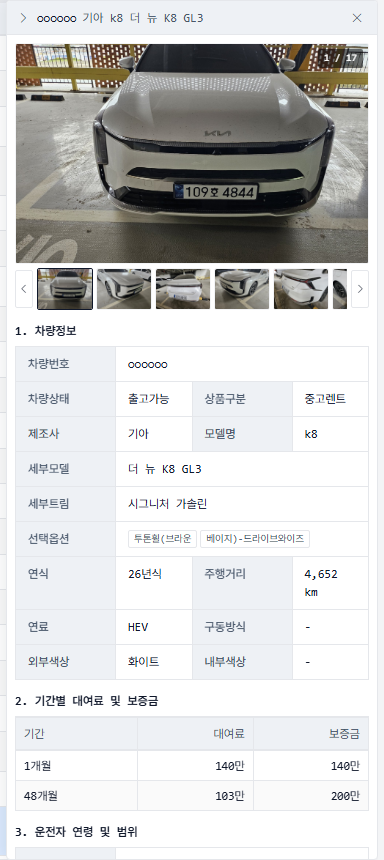
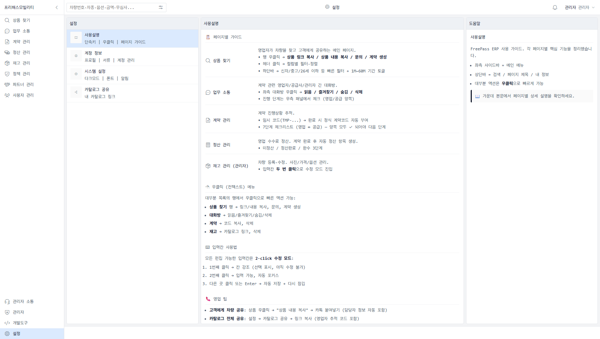
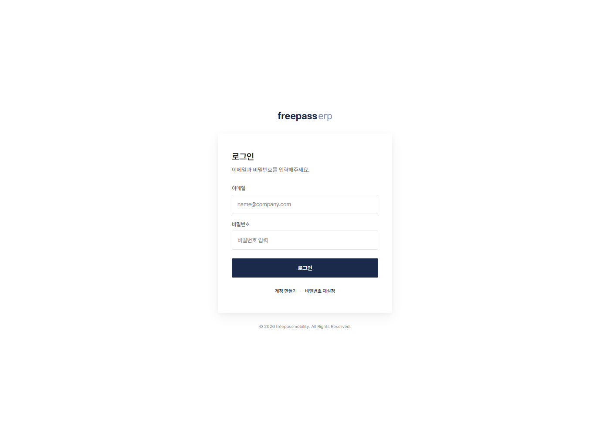
외근 중에도 폰으로 — 매물 검색, 계약 진행, 상품 공유까지 ERP를 그대로 씁니다. PC와 동일한 데이터, 반응형 화면.
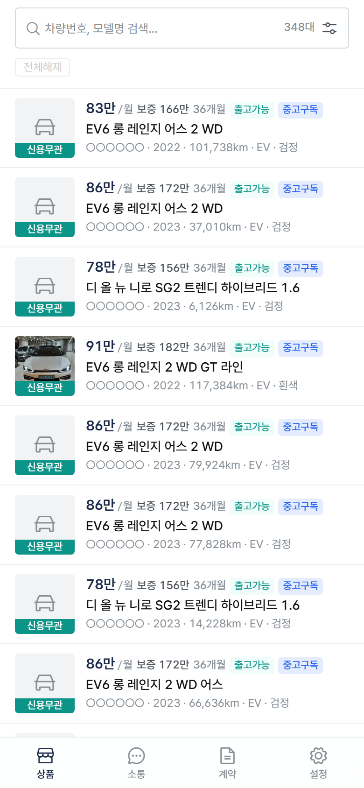
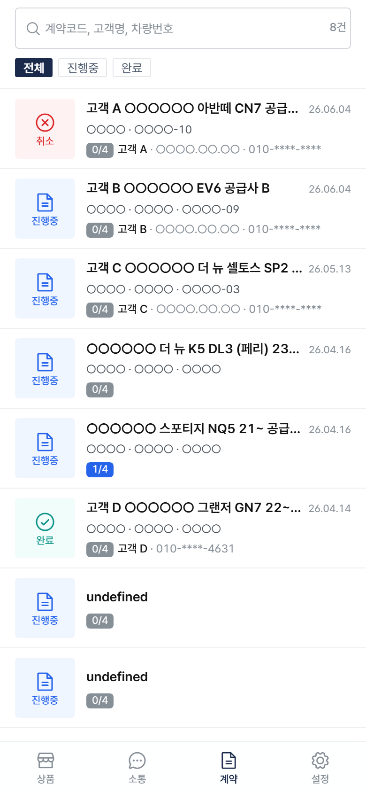
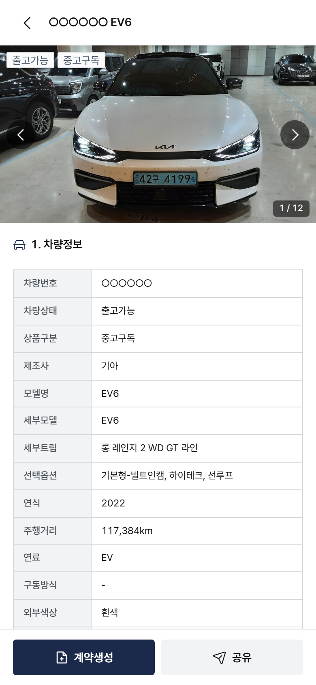
사무실 PC가 없어도, 폰에서 매물을 찾아 손님에게 공유하고 계약을 시작합니다. 같은 ERP·같은 데이터라 PC와 모바일을 오가도 진행상황이 그대로 이어집니다.
ERP에서 클릭 몇 번이면 손님에게 바로 공유됩니다. 손님은 모바일에서 카탈로그(목록)와 상품 상세를 이렇게 보고, 화면 어디에도 프리패스 이름은 없습니다.
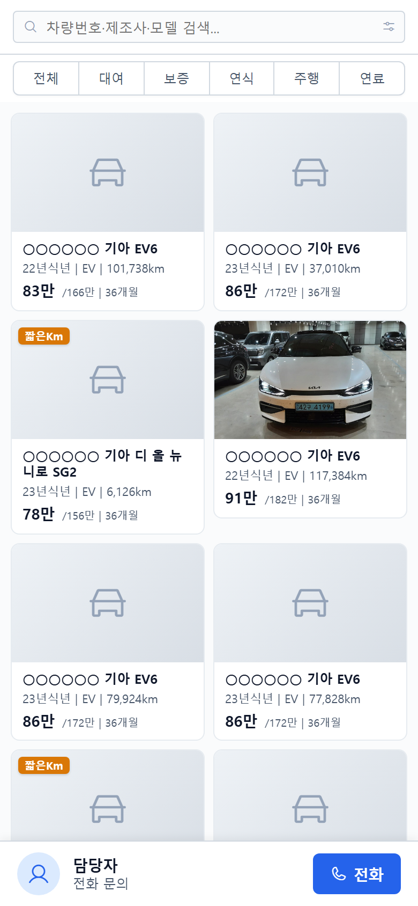
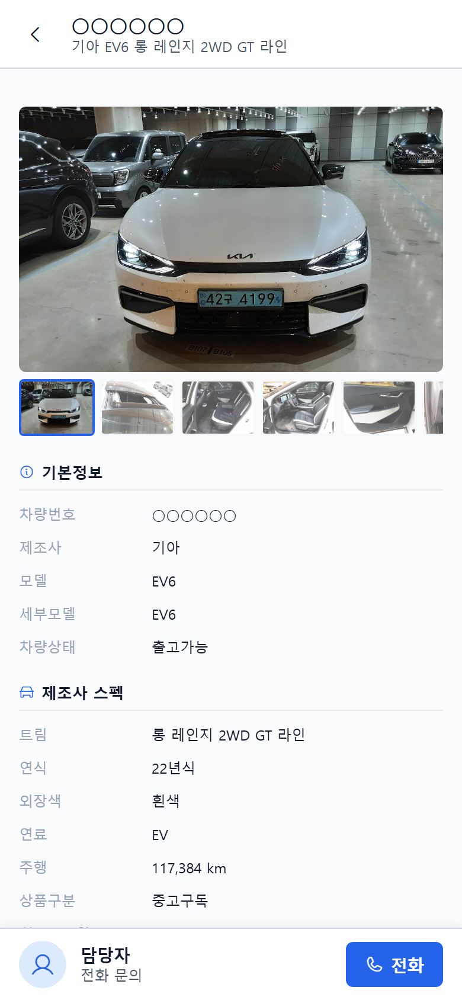
공유는 간편하게 — ERP에서 상품·카탈로그 링크 복사 → 카톡·문자로 전송 → 손님이 모바일에서 즉시 확인.
ERP가 보유한 매물을 파트너의 홈페이지·견적기에 그대로 연동합니다. 필요하면 홈페이지와 견적기 제작까지 지원합니다.
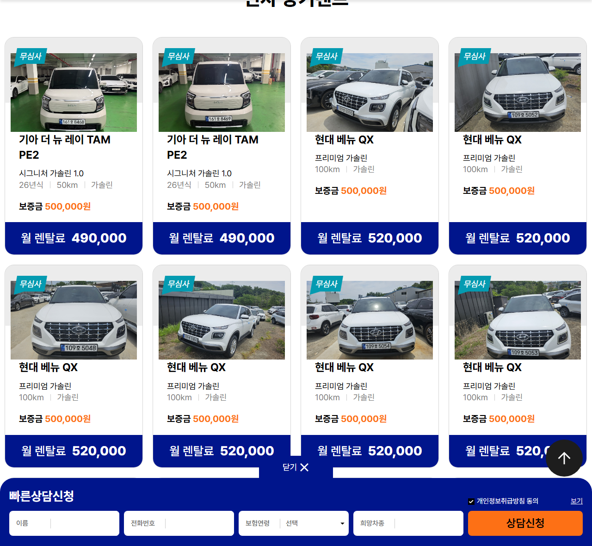
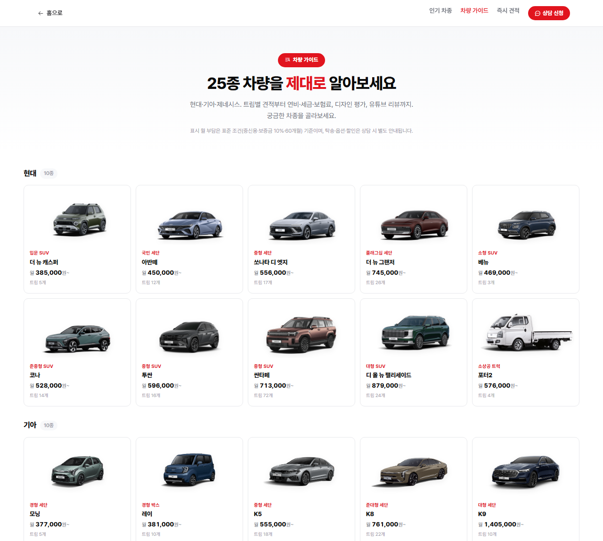
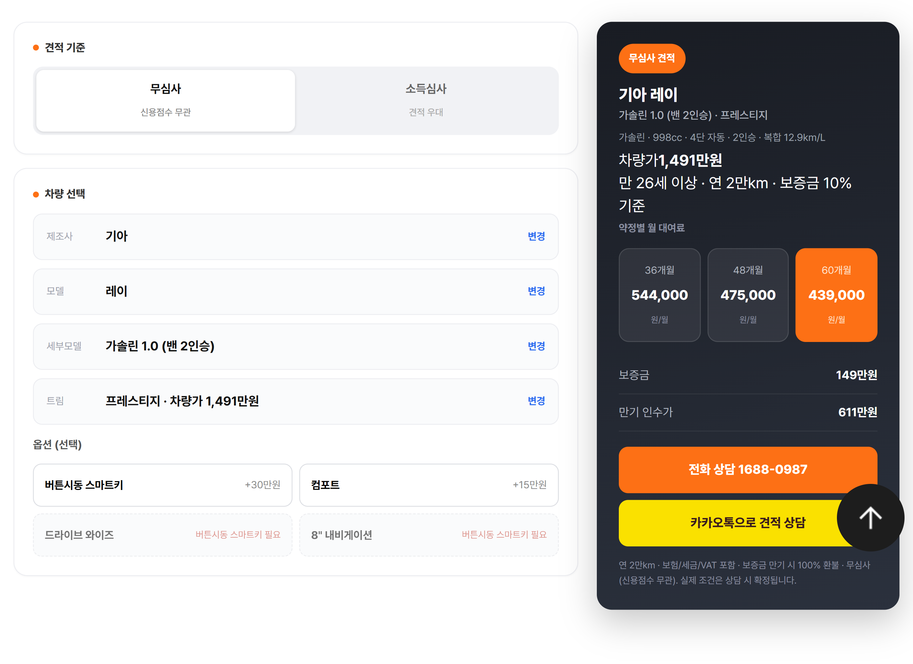
쓰던 엑셀 양식 그대로 다운로드 — 새 양식에 적응할 필요 없이 매물 데이터를 API·엑셀·이미지 등 원하는 형태로 전달합니다. 파트너 사이트가 없으면 홈페이지·견적기 제작까지 지원합니다.
고객 상황에 맞춰 다양한 상품을 한 플랫폼에서 취급합니다.
| 신용 구간 | 저신용 · 무심사 · 중신용 |
|---|---|
| 번호판 | 영업용 장기렌트 · 일반번호판(자가용) 렌트 |
| 차량 | 신차 · 재렌트(중고) |
| 신차 발주 | 중신용·저신용 고객도 신차 발주 가능 (견적 → 발주) |
| 보증 방식 | 유보증 (보증금 = 월 대여료 × N개월) · 무보증 |
| 무보증 상품 | 소득 확인 기반 — 계약 후 3~6개월 내 조기 해지 시 일부 환수 조건 |
| 신차 | 플랫폼 수수료 0% — 렌트사(공급사)가 제공하는 조건을 그대로 전달, 계약 수수료는 전액 영업 파트너 |
|---|---|
| 재렌트 (플랫폼 수수료) | 전체 대여료의 3% 전후를 프리패스가 플랫폼 운영 수수료로 수취 (기간별 상이) — 취급·사후관리가 필요한 재렌트는 프리패스모빌리티가 운영 |
| 정산 주기 | 매월 1일~말일 영업분을 익월 15일 지급 |
중개 역할은 그대로 다 하면서, 렌트사가 매물을 편하게 올리고 영업자와 공급사가 직접 소통하도록 창구를 원활하게 만드는 것이 프리패스모빌리티가 가려는 방향입니다. 프리패스는 플랫폼으로 자리를 잡고 직접 해결이 안 되는 것만 조율하며, 수수료도 차량별로 투명하게 공개합니다. 나아가 구독형 장기렌트로 서비스를 확장해, 거래를 더 빠르고 효율적으로 만들어 갑니다.
| 매물 확보 | 여러 렌트사의 출고가능 차량을 한 곳에서 확인 |
|---|---|
| 상담 속도 | 고객 조건에 맞는 차량을 빠르게 제안 |
| 자료 전달 | 사진·가격·조건을 정리된 형태로 — 쓰던 엑셀 양식 그대로 전달 |
| 계약 관리 | 문의부터 인도까지 진행 상태 확인 |
| 정산 관리 | 계약별 수수료와 지급 예정 내역 확인 |
| 사후관리 | 정비·사고 문의를 혼자 떠안지 않고 프리패스가 조율 |
| 손님 전달 | 화이트라벨 — 손님 화면에 프리패스 노출 없이 담당자 이름으로 전달 |
→ 매물 확보·조건 확인·자료 제작·정산에 쓰던 시간을 줄이고, 고객 상담과 계약에 집중할 수 있습니다.
| 홈페이지 | freepassmobility.com |
|---|---|
| 제휴 문의 | 박영협 대표 010-6393-0926 · 박태윤 매니저 010-2925-1798 |